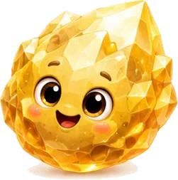
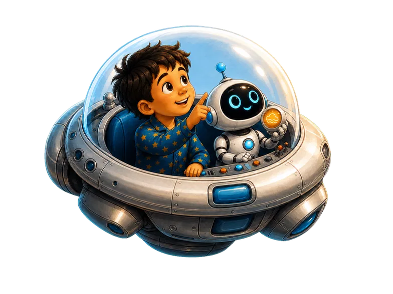
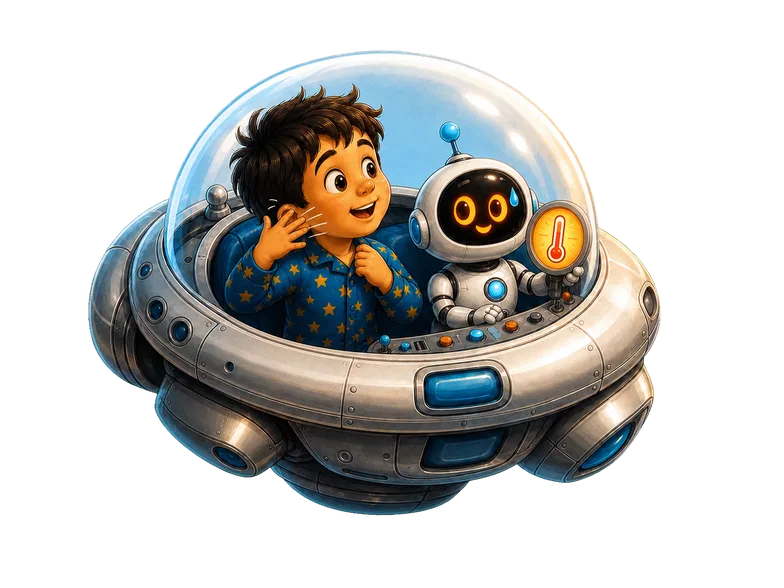
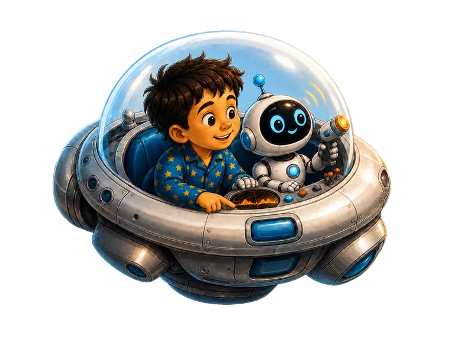

Venus:Earth’s Almost-Twin
Venus hides behind thick, golden clouds.
It is almost as wide as Earth, but its deep atmosphere traps heat, making Venus the hottest planet.
What is hiding beneath those clouds?

Tap a sparkling star on any page to meet a space friend and keep their sticker.
Venus hides behind thick, golden clouds.
It is almost as wide as Earth, but its deep atmosphere traps heat, making Venus the hottest planet.
What is hiding beneath those clouds?


